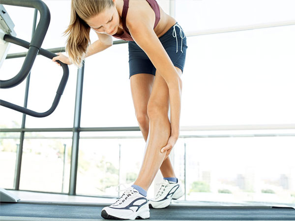

Гибкая боль

Боль в мышцах после растяжки – нормальное явление. Таким образом, организм обеспечивает себе защиту от дальнейших нагрузок.
Говоря о боли в мышцах, мы можем сказать, что боль в мышцах возникает из-за микроскопических разрывов мышечной ткани при тренировках. Это может привести к воспалению, опухоли, боли в мышцах, что в свою очередь создает большее давление на суставы, которые окружают мышцы.
Иначе говоря, растяжка — это уже и есть микротравмы. Но именно микротравмы! Тут нужно найти грань, между максимальным вашим шпагатом и той нагрузкой, которая приведет к реальной травме. Микротравмы заживают за день и вы продолжате тренировки, травма может заживать месяц и это шаг назад.
Итак, принцип тренировки прост — разминка — разогрев мышц — проработка максимальной точки растяжения и расслабление мышц.
Советы по уменьшению боли:
- Не стоит сразу перенапрягать мышцы, если чувствуете боль или где-то стреляет, лучше прерваться и отдохнуть несколько минут.
- Завершение заминкой занятий – еще один способ избежать боли. Потянитесь на носках, на полу или на стенке, а также употребляйте больше жидкости каждую тренировку.
- Еще боль можно унять при помощи массажа или специальных гелей, а также принять теплую ванну или поплавать.
- Мышцы после растяжки следует держать в тепле. Сорвать холодную мышцу легче, чем горячую.
- Знайте свой предел, и когда почувствуете, что уже не можете – лучше остановиться. Потому что в случае тяжелой травмы на восстановление потребуется больше времени, чем на снятие боли.
- Обращайте внимание на симметричность ваших конечностей – это поможет предупредить риск возникновения непропорциональной боли в мышцах.
- Растяжку лучше выполняйте долго, так мышцы будут успевать подстроиться под ритм подготовки.
- Если же боль продолжается более шести дней – нужно обратиться к врачу, так как возможно это травма.